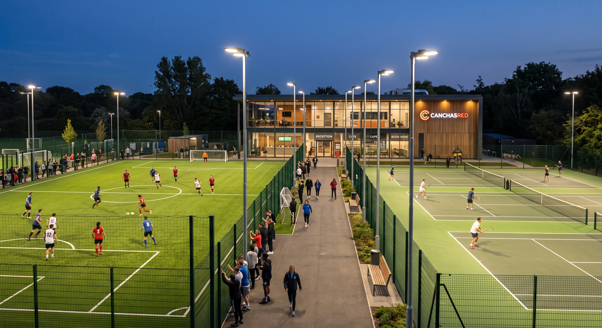

Beneficios de la Digitalización
Gracias a la digitalización del inventario y la reserva inmediata, el recinto pasó de planillas manuales a registrar más de 120 horas arrendadas al mes sin cancelaciones de último minuto.

En mayo de 2026, el complejo "Central Norte" de Ñuñoa administraba cuatro canchas únicamente mediante WhatsApp y llamadas telefónicas. El cruce de reservas y los turnos sin pagar de los días martes y miércoles por la noche generaban pérdidas continuas.
Tras integrarse a la plataforma CanchasRed, publicaron sus horarios disponibles con confirmación inmediata y pasarela de pago directa. El resultado fue inmediato:
- Reducción del 80% en horas nocturnas sin ocupar.
- Eliminación total de reservas duplicadas.
- Más de $1.800.000 generados en reservas automáticas durante su primer mes en el sistema.
Deportistas organizaron su primer torneo relámpago en menos de 48 horas
Coordinar a varios planteles para jugar en un mismo lugar solía tardar semanas de negociaciones individuales con distintos administradores de recintos.

A través del filtro por comuna y disponibilidad horaria de CanchasRed, los capitanes de la "Liga Nocturna Santiago" reservaron dos multicanchas simultáneas para el fin de semana en menos de 15 minutos.
- Coordinación de 8 equipos en menos de 48 horas.
- Reserva garantizada sin pagos dobles ni cruces de horario.
- Más de 40 jugadores disfrutando el deporte sin complicaciones de gestión.